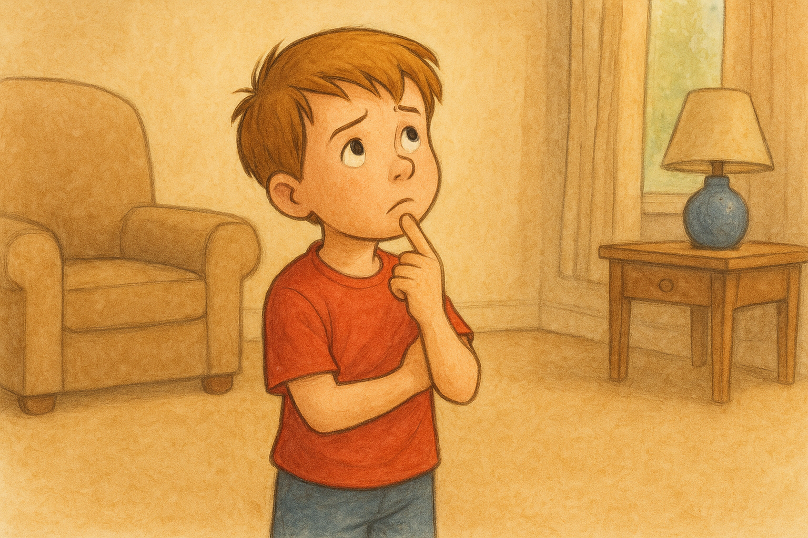
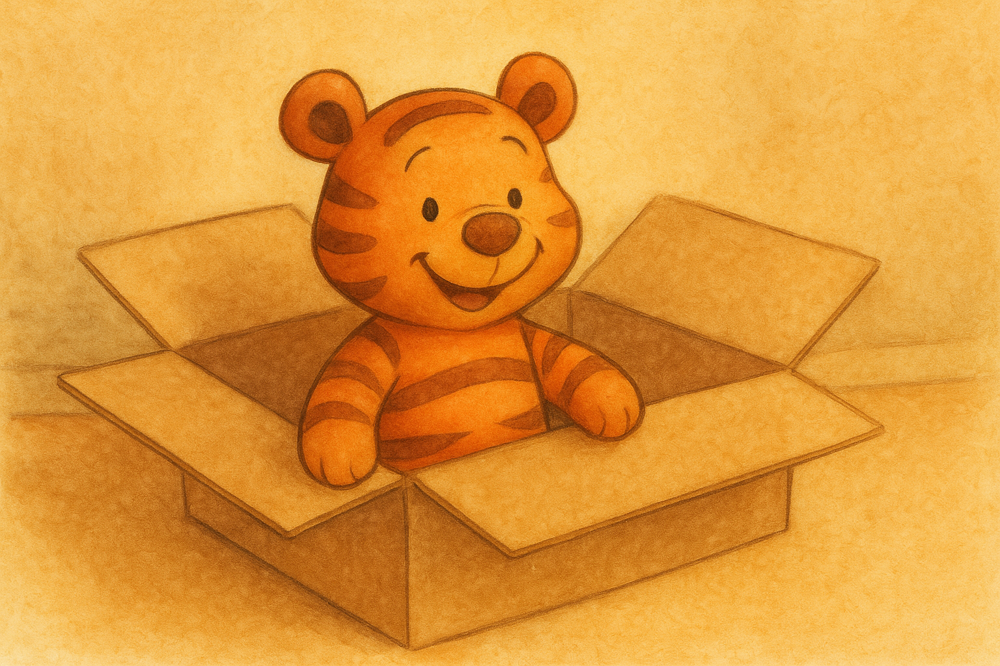
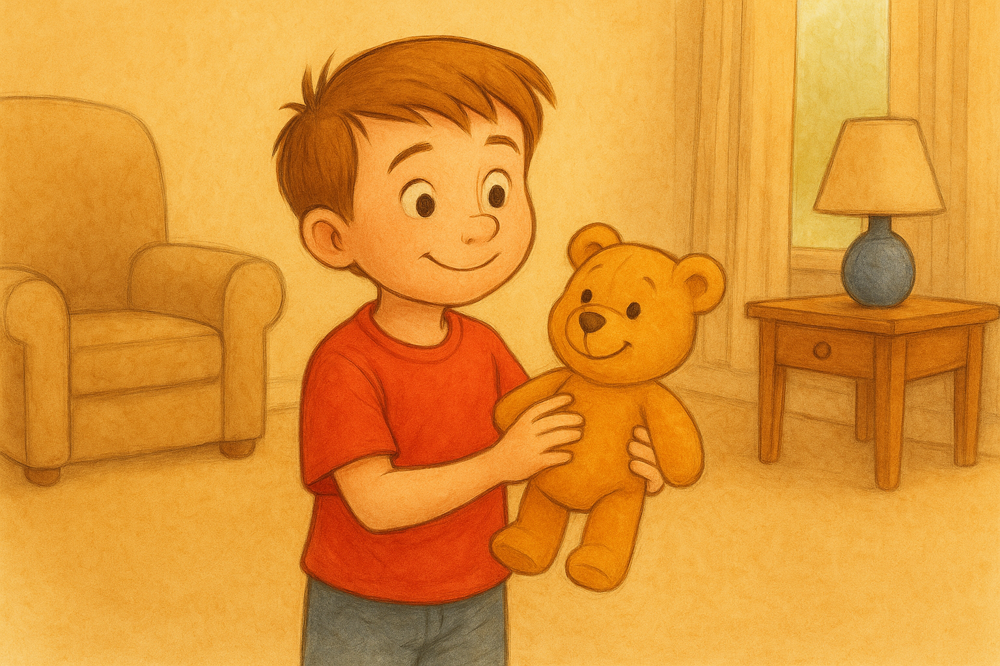

LABIRINTO DA AVENTURA:
EM BUSCA DO URSINHO AMARELO PERDIDO
Christopher Robson, um menino de 10 anos, perdeu seu ursinho amarelo em algum lugar da casa. Então ele pede sua ajuda para achar o brinquedo. Vamos embarcar nessa aventura e ajudá-lo a achar o ursinho?
Por onde começamos a procurar?
Vocês vão procurar o ursinho no quarto do Christopher. Ao entrar no quarto, o menino percebe que sua caixa de brinquedos não está lá. Então ele se pergunta onde está sua caixa. Você ouve isso e diz:
Você e o Christopher vão perguntar para a mãe do menino onde está a caixa de brinquedos. Ela diz que a caixa está na sala ao lado do sofá. Vocês vão até a sala, abrem a caixa e Christopher diz:
"Ops, acho que esse não é o meu ursinho amarelo..."
"É minha outra pelúcia que minha mãe me deu de presente junto com o ursinho amarelo!"
Bom, o que fazemos agora?"
E então, vocês continuam a busca pelo ursinho perdido no quarto do menino. Até que em certo momento, ao olhar embaixo da cama, você viu que havia certas roupas e brinquedos espalhados, onde poderia estar a pelúcia. Enquanto isso, Christopher te pede ajuda para procurar dentro do guarda roupas. Então você diz:
Você decide ajudar o menino a procurar no guarda roupas, mas não acham nada. Então ele te pergunta: "Onde mais você acha que meu ursinho pode estar?
Vocês começam a procurar debaixo da cama do Christopher. Até que o menino diz: "Ei! O que é isso?"
Vocês começam a procurar na sala, mas não acham nada, apenas uma caixa ao lado do sofá. Então o menino diz: "Procurei em tudo qualquer lugar, exceto no meu quarto". E você responde:
"Sim, achei! Muito obrigado pela sua ajuda. Foi realmente uma aventura e tanto!"
Você brinca junto com o menino, se despede dele e volta para casa descansar depois dessa grande jornada em busca do ursinho amarelo do Christopher.